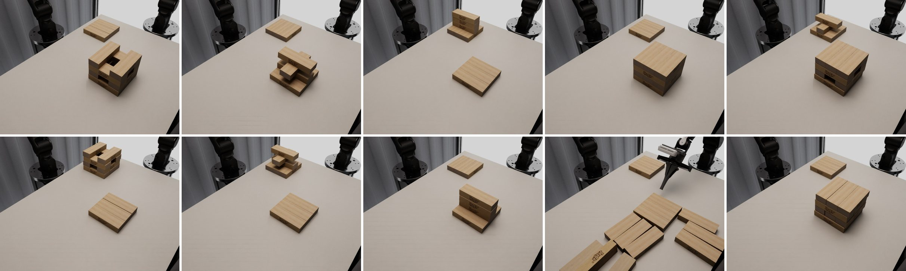
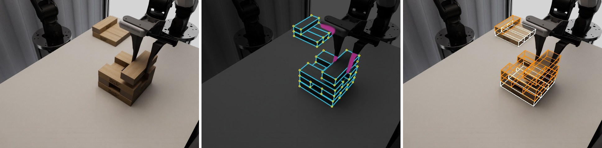

San Francisco
The TOWER challenge at the G2A workshop (CoRL 2026) asks two simulated robot arms to transfer, stack, dismantle and fill towers of Jenga-style blocks while seeing the scene only through four cameras. An episode lasts up to 210 seconds and chains as many as nine grasps, places or pushes, each with millimetre tolerances, under unknown block mass, friction and tower placement. Instead of cloning the organizers' 531 demonstrations end to end, we use them for what they state reliably: the task plan and the geometry of the scene. The contact skills (grasping, placing, pushing) are learned with reinforcement learning in our recreation of the evaluator, and an agentic controller strings them together: it calls one skill at a time, checks the outcome, and retries, skips or switches arms. This teacher reads exact block poses from the simulator. We distil it into a student that uses only the official observations: a keypoint network with a multi-view pose fit replaces the exact state, a transformer trained with DAgger replaces the hand-written decision logic, and behaviour cloning with noise injection replaces the planned insertion controllers. In our closed-loop tests on rendered camera images, the submitted student succeeds in 59 of 60 transfer and stacking episodes; push-down and insertion remain the hard part. Because the system is made of separate skills, learned parts can replace planned ones one at a time: after the deadline, reinforcement-learned reaching replaced the planned arm motions without retraining anything else. Official results are announced at the workshop on November 12.
Two seven-joint AgileX Nero arms with parallel grippers, called left and back after where they are mounted, share a table with two tower pads. Each pad carries three fixed foundation blocks; the movable blocks are 150 × 50 × 28 mm. Four RGB cameras watch the scene: two fixed cameras on opposite sides of the table and one on each wrist. There are five tasks, each with a two-layer and a three-layer variant, so ten variants in all.

| Task | What has to happen | Operations (2 / 3 layers) | Arms | Demo length (2 / 3 layers) |
|---|---|---|---|---|
| 1 Tower transfer | Move the side blocks of a tower, two per layer and top layer first, onto the other pad | 4 / 6 | alternate by layer | 115–119 s / 177–181 s |
| 2 Cross transfer | Move the centre block of each layer, top first, and rebuild the cross-shaped tower on the other pad | 2 / 3 | alternate by layer | 59–62 s / 92–95 s |
| 3 Vertical stacking | Stack single blocks on the other pad with their centres vertically aligned | 2 / 3 | back arm only | 58–61 s / 83–91 s |
| 4 Push-down | Push every block off a full tower (three per layer), top layer first, in a fixed order | 6 / 9 | alternate by layer | 116–122 s / 171–176 s |
| 5 Insertion | Insert blocks into the empty centre slots of a tower, highest first, with about 1 mm of clearance per side | 1 / 2 | left; back, then left | 58–60 s / 160–161 s |
Operations are grasp-and-place transfers (Tasks 1–3, 5) or pushes (Task 4). Demo lengths are the range over the organizers' demonstrations: 50–56 per variant, 531 in all, recorded at 30 Hz.
The policy runs as a server. At each call it receives the four camera images (640 × 480), the 14 joint angles, the two gripper widths, the simulated time and the task name, and it returns a chunk of up to 16 rows of joint targets. Each row holds 7 joint angles and a gripper width per arm and is applied for 0.1 s, so the robot runs at 10 Hz and an episode of 210 s has up to 2,100 rows. The simulation pauses while the policy thinks.
$$o_t=\big(I^{(1)}_t,\dots,I^{(4)}_t,\;q_t\in\mathbb{R}^{2\times 7},\;w_t\in\mathbb{R}^{2},\;t\big),\qquad A_t\in\mathbb{R}^{H\times 16},\quad 1\le H\le 16 .$$The policy is never told block poses, depth, velocities, forces, masses, friction or which robustness case it is in. Each variant is evaluated on ten episodes: one nominal and nine drawn from the robustness cases below, on fixed layouts that participants do not see.
| Robustness case | Range |
|---|---|
| Light, heavy, uneven | block mass × 0.4–0.7, × 1.4–2.0, or × 0.4–2.0 per block |
| Slippery, high friction | static friction 0.15–0.30 or 0.9–1.3 (dynamic 0.07–0.14 or 0.5–0.8) |
| Shifted assembly | whole tower moved up to 15 mm per axis and turned up to 10° |
| Irregular layers | each layer moved up to 8 mm and turned up to 5° |
| Lighting | intensity × 0.25–2.0, colour 3000–8500 K, direction ±60° |
| Combined | mass × 0.5–1.8 per block, mixed friction, shift up to 10 mm / 8°, light × 0.4–1.6 |
Scoring works at three levels: task success (every block where it belongs, nothing else disturbed), operation success (grasps and places, or pushes), and long-horizon progress, the share of the task's steps completed in order. A disturbance rate counts non-target blocks that were moved. Tasks are weighted 1 : 1 : 1 : 3 : 3, so push-down and insertion carry two thirds of the total.
The challenge ships demonstrations, and the obvious approach is to clone them. We decided against making that the core of the system. This is our reasoning, not an experiment we ran:
Imitation itself is not the problem; imitating a fixed set of demonstrations is. Our student is also trained by imitation, but of a teacher we can query in any state, including states we create by injecting failures. So we split the work: take the plan and the geometry from the demonstrations, learn the contact skills with reinforcement learning, and learn the decisions by interactive imitation of our own teacher.
By agentic we mean a system that works the way a software agent uses tools: it breaks the goal into steps, calls a specialized skill for each step, checks the result, and decides what to do next. The skills are the tools; some are learned with reinforcement learning and some are planned. In the teacher the decisions come from a task graph and an executor; in the student they come from a learned high-level policy. We think this structure fits long-horizon manipulation for five reasons:
In the language of hierarchical reinforcement learning, the high-level policy \(\mu\) picks an option (Sutton et al., 1999), a subtask with a goal block and an arm, from the estimated state \(\hat s_t\) and a memory \(m_t\) of earlier subtasks and their outcomes, and the option's skill produces the actions until its success check ends it:
$$\omega_k=(\text{subtask},\ \text{goal},\ \text{arm})\sim\mu(\cdot\mid \hat s_t,\,m_t),\qquad a_t\sim\pi_{\omega_k}(\cdot\mid \hat s_t).$$The evaluator itself is not public, so we rebuilt it in Isaac Lab (Mittal et al., 2023) from the official station and block assets. Every number that matters was matched to the organizers' data:
The teacher is privileged: it reads the exact pose of every block from the simulator, including hidden ones. Its decisions come from a task graph per variant and a deterministic executor; the contact skills are PPO policies.
A task graph is a list of skill calls built from the demonstrations' plan. A transfer is four calls per block (move to the pre-grasp pose, grasp and lift, carry to the pre-place pose, place and release), a push-down two per block (move behind the block, push), an insertion six per block (approach, grasp, carry to the slot, insert, move behind the block, push it home). The idle arm is parked whenever the working arm changes. The graphs have 7–27 calls.
{"id": "t0_grasp", "skill": "grasp_lift", "arm": "back", "block": "source_l2_a", "lift_m": 0.06, "timeout_s": 15.0}
{"id": "t0_place", "skill": "place_release", "arm": "back", "tol_pos_m": 0.005, "tol_yaw_deg": 5.0, "settle_s": 1.0}Two calls from the Task 1-2 graph (some fields left out).
The executor runs at 10 Hz. Each call it builds the current skill from the state, steps it, and judges its outcome when it ends: lifted and held, placed within tolerance, pushed clear with the rest of the tower within 10 mm, inserted to depth. On a failure it retries (up to three attempts per block: re-grasp, re-place, or re-carry if the block is still held), skips the block, or, once per block, hands a place that missed by up to 15 mm to the other arm when its own arm cannot reach the block again. Before every move it parks the other arm if it is within 18 cm of the target.
Grasp-and-lift, place-and-release and push are trained with PPO (Schulman et al., 2017), one policy per skill and arm, in light GPU scenes with one arm and up to 15 blocks, 3,072–4,096 environments in parallel. The setup is an asymmetric actor-critic (Pinto et al., 2018). The actor sees only what a camera-based system could estimate: noisy block poses (a per-episode bias of 2–3 mm and 2–3°, per-step jitter, occasional dropouts and 1 cm outliers) and the arm's own state. The critic additionally sees the true poses, block mass and friction, finger contact forces and joint velocities. Because the actors never relied on privileged inputs, the student reuses them unchanged.
We use the clipped PPO objective with generalized advantage estimation (Schulman et al., 2016), implemented in rsl_rl (Rudin et al., 2022):
$$\mathcal{L}^{\text{clip}}(\theta)=\mathbb{E}_t\Big[\min\big(\rho_t(\theta)\,\hat A_t,\; \operatorname{clip}\big(\rho_t(\theta),1-\epsilon,1+\epsilon\big)\,\hat A_t\big)\Big],\qquad \rho_t(\theta)=\frac{\pi_\theta(a_t\mid o_t)}{\pi_{\theta_{\text{old}}}(a_t\mid o_t)},$$ $$\hat A_t=\sum_{l\ge 0}(\gamma\lambda)^l\,\delta_{t+l},\qquad \delta_t=r_t+\gamma\,V_\phi(s_{t+1})-V_\phi(s_t),$$ $$\mathcal{L}(\theta,\phi)=-\mathcal{L}^{\text{clip}}(\theta) +c_v\,\mathbb{E}_t\big[(V_\phi(s_t)-\hat R_t)^2\big] -c_e\,\mathbb{E}_t\big[\mathcal{H}[\pi_\theta(\cdot\mid o_t)]\big].$$The actor \(\pi_\theta\) reads the actor observation \(o_t\) (65–73 inputs); the critic \(V_\phi\) reads the privileged state \(s_t\) (141–161 inputs). \(\epsilon=0.2\), \(\gamma=0.99\), \(\lambda=0.95\), \(c_v=1\) (with a clipped value loss), \(c_e=0.006\); the learning rate adapts to keep the KL divergence between updates near 0.016. Networks: actor 256-256-128, critic 512-256-128, ELU.
A skill's action is a small change of the gripper's target pose in the arm's base frame, plus a gripper command for grasp and place. It is smoothed and scaled with the distance to the goal (fine steps near the block, larger ones far away), then turned into joint targets by damped least-squares inverse kinematics with a posture prior, and finally corrected for gravity sag:
$$\bar a_t=0.3\,a_t+0.7\,\bar a_{t-1},\qquad \Delta p=s(d)\,\bar a_{1:3},\qquad \Delta\vartheta=\vartheta_{\max}\,\bar a_{4:6},$$ $$\Delta q=J^{\top}\big(JJ^{\top}+\lambda^2 I\big)^{-1}e+\big(I-J^{+}J\big)\,k\,(q_{\text{prior}}-q),\qquad q_{\text{cmd}}=q_{\text{des}}-K_p^{-1}\,\tau_g(q_{\text{des}}).$$\(s(d)\) grows from 5 to 20 mm (grasp), 4 to 15 mm (place) or 12 to 15 mm (push) per step as the distance \(d\) to the goal grows; \(\lambda=0.02\); four iterations per step, at most 0.15 rad per joint per step; \(\tau_g\) is the gravity torque of the arm (and of a nominal block when holding one), \(K_p\) the joint stiffness.
The push skill shows the pattern every skill follows: shaping toward the right contact, progress, penalties for disturbing anything else, and a large bonus for finishing early.
$$\begin{aligned} r_t ={}& 0.5\,r^{\text{align}}_t + 150\,(x_t-x_{t-1}) - \frac{\max(0,\,|y_t|-5\,\text{mm})}{1\,\text{cm}} - 0.2\max\big(0,\,|\Delta\psi_t|-2^\circ\big)\\ & - 0.5\sum_{j\neq\text{target}}\frac{\max(0,\,d_j-2\,\text{mm})}{1\,\text{cm}} - 0.01\,\|a_t-a_{t-1}\|^2 - 0.1\,r^{\text{limits}}_t\\ & + \mathbf{1}[\text{success}]\,(20+T-t) - 2\,\mathbf{1}[\text{failure}] \end{aligned}$$\(x_t\) is the block's travel along the push direction, clipped to [−0.05, 0.16] m, so the progress term is potential-based; \(y_t\) its sideways travel, \(\Delta\psi_t\) its yaw change in degrees, \(d_j\) the displacement of every other block. \(r^{\text{align}}\) rewards the fingertips for reaching the contact pose 86.5 mm behind the block; \(r^{\text{limits}}\) penalizes joints within 0.1 rad of their limits. Success: the block has left the tower (0.16 m from its axis, or 0.09 m and on the table) while no other block moved more than 10 mm, tilted more than 30° or dropped more than 15 mm. Failure: the tower broke, or the block was shoved more than 4 cm sideways. Episodes last 8 s.
\(k_t\) is the mean distance between four keypoints on the gripper and the same keypoints at the ideal grasp, \(h_t\) the lift height. Success: lifted 8 cm and held for five steps with the grasp within 10 mm along the block, 5 mm vertically and 6° of the ideal; otherwise the episode ends as a bad grasp. Episodes last 15 s and start from a mix of poses: around the pre-grasp, halfway down, or already straddling the block.
Each policy trains for a few hundred to about a thousand PPO iterations at about 12,000 environment steps per second; the left grasp policy took about 850 iterations, 84 million steps and 2.1 hours. Measured on 500 episodes per setting on the GPU:
| Skill | Left, nominal | Left, robustness cases | Back, nominal | Back, robustness cases |
|---|---|---|---|---|
| Grasp and lift | 100 % | 98.8 % | 99.2 % | 100 % |
| Place and release, exact poses | 99.6 % | 99.0 % | 99.8 % | 100 % |
| Place and release, noisy poses | 92.6 % | 92.2 % | 87.2 % | 84.8 % |
| Push | 98.4 % | 96.6 % | 99.6 % | 94.6 % |
Independent 2 mm biases on the block and the goal limit any place to about 90 % at a 5 mm tolerance, which is why the noisy-pose numbers are lower.
With exact poses, the teacher completes 1,186 of 1,200 episodes on Tasks 1–3 and 446 of 480 across all ten variants (nominal and robustness cases, CPU physics).
The student is what the evaluator talks to. It sees only the official observation. It keeps the teacher's structure and executor code but replaces three things: the exact state (by perception), the task-graph pointer (by a learned high-level policy) and the planned insertion controllers (by distilled networks). The task plan, the list of goals and the arm prescribed for each, still comes from the public demonstrations; nothing is taken from the evaluation layouts.
The perception is a class-agnostic detector followed by model-based fitting. A keypoint network finds block corners and edges in each image without knowing which block is which. Identity, pose and confidence come from fitting the known box models to the detections in all four views together, with a tracker that carries each block from call to call.

Network. A U-Net (Ronneberger et al., 2015) on a ResNet-34 encoder (He et al., 2016) outputs four full-resolution maps: corners, edges, block surface, and block surface hidden by an arm or finger. Corners and edges are trained with the quality focal loss (Li et al., 2020) against Gaussian targets:
$$\mathcal{L}=\mathrm{QFL}(\hat Y^{\text{corner}},Y^{\text{corner}})+\mathrm{QFL}(\hat Y^{\text{edge}},Y^{\text{edge}}) +0.5\,\mathrm{BCE}(\hat M,M)+0.5\,\mathrm{BCE}_{w^{+}=5}(\hat O,O),$$ $$\mathrm{QFL}(z,y)=\frac{1}{N^{+}}\sum_{\text{pixels}}\big|\sigma(z)-y\big|^{2}\Big[-y\log\sigma(z)-(1-y)\log\big(1-\sigma(z)\big)\Big],$$ $$Y(u)=\max_k\exp\!\Big(-\frac{\|u-u_k\|^2}{2\sigma_Y^2}\Big).$$\(\sigma_Y\) is 1.5 px for corners and 1.0 px for edge points; \(N^{+}\) is the number of pixels with target above 0.5; \(M\) the block mask, \(O\) the arm-covered mask (positive weight 5). Training data: 28,227 frames rendered from teacher rollouts in our simulator with randomized lighting, plus 2,800 frames of the organizers' dataset, which we sample three times as often; photometric, geometric and JPEG augmentation. On 400 held-out renders, 98.6 % of corners are found within 3 px (97.8 % precision) with a median error of 0.18 px.
Multi-view fit. Each block is a box with 8 corners and 152 edge samples. Its pose \((R,t)\) minimizes a robust reprojection error over all four cameras (the wrist cameras posed by the arm's forward kinematics), plus a prior from the tracker:
$$\begin{aligned}\min_{R,\,t}\;&\sum_{c=1}^{4}\Big[\sum_{i}w_{\text{c}}\,s_{ci}\,\rho\big(\|\pi_c(RX_i+t)-u_{ci}\|\big) +\sum_{j}w_{\text{e}}\,s_{cj}\,\rho\big(|n_{cj}^{\top}(\pi_c(RX_j+t)-e_{cj})|\big)\Big]\\ &+\tfrac12\Big\|\begin{bmatrix}t-t_0\\ \log(RR_0^{\top})^{\vee}\end{bmatrix}\Big\|^2_{\Lambda}\end{aligned}$$\(\pi_c\) projects into camera \(c\); \(u_{ci}\) is the corner peak matched to corner \(X_i\); \(e_{cj}\) the nearest edge maximum along the projected edge normal \(n_{cj}\); \(s\) the network's peak values; \(w_{\text{c}}=1\), \(w_{\text{e}}=0.3\). \(\rho\) is the Huber loss (1.5 px) for the first two Gauss-Newton iterations and Tukey's loss (2.5 px) for the remaining four; points hidden by other blocks or by an arm are left out. The tracker's prior \((t_0,R_0)\) has base standard deviations of 10 mm and 0.05 rad, tightened for blocks at rest.
Tracker. A set of rules rather than a filter: a block that moved last call is predicted to move as much again; a block in a closed gripper follows the gripper's forward kinematics with a slowly updated in-hand offset; resting blocks are low-pass filtered and anchored; a lost moving block coasts for up to five calls; lost blocks are searched for on the table, on other blocks or leaning. Each block gets one of four confidence levels.
Accuracy and speed. On the organizers' frames, resting blocks are within 0.18 mm (median) and 0.62 mm (90th percentile), held blocks within 0.2 mm (90th percentile). The hard case is an inserted block nearly hidden under the roof of the Task 5 tower (90th percentile 3.5 mm). A call takes about 93 ms on our server, 86 ms of it perception.
The high-level policy decides what to do next whenever a subtask ends (and every 2 s while idle). It is a transformer encoder (Vaswani et al., 2017) over an unordered set of tokens: one global token (task, time left, perception health), two arm tokens (gripper pose, holding, parked), up to 16 block tokens (estimated pose relative to the pads, confidence, how far it moved, offset to its goal) and up to 9 goal tokens (goal pose, attempts and outcomes so far, which arm can reach it, whether it is done). It has 3 layers, 4 heads and width 128, under one million parameters, and decides in 1–5 ms on a CPU. The decision is factorized: first the subtask type (acquire, deliver, push off, insert, push home, park, idle, re-push), then the goal by pointing at a goal token (Vinyals et al., 2015), then the arm:
$$p_\psi(o,g,a\mid x)=p_\psi(o\mid x)\;p_\psi(g\mid x,o)\;p_\psi(a\mid x,o,g),\qquad \ell_\psi(g=j\mid x,o)=\frac{(W_k h_j)^{\top}W_q\,[h_{\text{glob}};E_o]}{\sqrt{d}} .$$Invalid choices are masked (for example, delivering a block the arm does not hold). A fourth head predicts, for every goal, whether it is satisfied right now.
The expert. The labels come from a privileged expert: the task graph's decision logic, but reading the simulator's truth about which goals are satisfied. It closes goals that are done even after a failed check, reopens a finished goal that was disturbed later, never hands a block to the other arm (that recovery failed in 206 of 217 tries for the teacher), gives up on tilted blocks, and leaves failed goals that are now buried under later layers alone.
Behaviour cloning, then DAgger. Rollouts run in the recreated evaluator with block poses passed through a perception-error model: recorded errors of the real estimator, replayed by block class (resting, held, moving, being pushed, foundation, fallen) with their confidence levels and the chance of losing a pushed block as it tips. With probability 0.15 per subtask a failure is injected (a shifted pre-grasp, a dropped block, a shifted goal, an off-centre grip, a short push), so that the data contain recoveries. Round 0 is driven by the expert with 10 % random exploration; three DAgger rounds (Ross et al., 2011) follow, in which the learner's decision is executed and the expert only labels (with probability β the expert's decision is executed instead):
$$\mathcal{D}_{i+1}=\mathcal{D}_i\cup\big\{(x,\,\mu^{*}(s))\;:\;s\sim d^{\,\beta_i\mu^{*}+(1-\beta_i)\mu_{\psi_i}}\big\}, \qquad \psi_{i+1}=\arg\min_\psi\,\mathcal{L}(\psi;\mathcal{D}_{i+1}),$$ $$\mathcal{L}(\psi)=\frac{\sum_b w_b\big[\mathrm{CE}(o^{*}_b)+\mathrm{CE}(g^{*}_b\mid o^{*}_b)+\mathrm{CE}(a^{*}_b\mid o^{*}_b,g^{*}_b)\big]}{\sum_b w_b} +0.5\,\overline{\mathrm{BCE}}\big(\hat y_{bj},y_{bj}\big),\qquad w_b=1+4\,\mathbf{1}[\text{off-nominal}_b].$$\(\beta\) = 0.5, 0, 0.5 in the three DAgger rounds. Off-nominal rows (after a failure, an injection or exploration) weigh five times more. \(y_{bj}\) is the true "goal \(j\) satisfied" flag. Each round retrains from scratch on all data so far: 3,600 episodes and 65,242 decisions in the end. Validation decision accuracy 96.8 % (95.5 % on off-nominal rows); the satisfied-goal head reaches an AUC of 0.999.
For DART, a slowly varying perturbation is added to the planned controller's target before every recorded step, and the label is the controller's correction from the perturbed state:
$$n_{t+1}=(1-\theta)\,n_t+\sigma\,\varepsilon_t,\qquad \varepsilon_t\sim\mathcal{N}(0,I_6),\quad \theta=0.3,$$ $$\mathcal{L}_{\text{BC}}=\frac1N\sum_i\Big[\tfrac16\big\|\tanh f_{1:6}(o_i)-a^{*}_{i,1:6}\big\|^2+0.1\,w_i\,\mathrm{BCE}\big(f_7(o_i),g^{*}_i\big)\Big].$$\(\sigma\) per step is 1 mm and 0.15° (grasp), 0.2 mm and 0.04° (insert), 0.5 mm and 0.1° (push-in), scaled by a factor drawn from U(0, 1.5) per segment. The network is an MLP 68 → 256 → 256 → 256 → 7 with tanh-bounded motion outputs and a gripper logit, trained on 328,113 steps from 1,200 episodes. Distilled, the three skills succeed in 83 of 96 Task 5 test episodes against 78 for the planned controllers they imitate. One lesson: when the previous action was an input, the networks learned to copy it and drifted in closed loop; the previous-action input is now masked out.
Testing against the official evaluator changed four things between our first student and the submitted one, student v1.3:
The submitted student is one frozen bundle of networks and configuration files served over a WebSocket, with independent state per evaluation session.
Rebuilding the submission from the public downloads takes about 40 hours on one RTX A5000 (24 GB) and a 24-thread CPU: PPO on the GPU, rollouts and every acceptance test on CPU physics.
We test the student two ways. On CPU physics with the perception-error model, many episodes are cheap. In the closed loop on rendered camera images, our simulator renders the four cameras and the student's real perception runs on them; this is the closest to the official setting we have, but slow and not deterministic. Both run every episode to 210 s and judge success on the final arrangement, as the official evaluation did. Every test covers the ten robustness cases.
| Variant | Operations | Error model: success | Error model: progress | Rendered cameras: success |
|---|---|---|---|---|
| 1-2 Transfer | 4 | 24 / 24 | 100 % | 10 / 10 |
| 1-3 Transfer | 6 | 21 / 24 | 99.0 % | 10 / 10 |
| 2-2 Cross transfer | 2 | 24 / 24 | 100 % | 9 / 10 |
| 2-3 Cross transfer | 3 | 23 / 24 | 99.3 % | 10 / 10 |
| 3-2 Vertical stacking | 2 | 24 / 24 | 100 % | 10 / 10 |
| 3-3 Vertical stacking | 3 | 24 / 24 | 100 % | 10 / 10 |
| 4-2 Push-down | 6 | 10 / 24 | 86.1 % | 8 / 10, 5 / 10 |
| 4-3 Push-down | 9 | 0 / 24 | 70.4 % | 0 / 10 |
| 5-2 Insertion | 1 | 15 / 24 | 81.2 % | 8 / 10 |
| 5-3 Insertion | 2 | 18 / 24 | 89.6 % | 2 / 10, 7 / 10 |
Student v1.3. Error model: 24 episodes per variant over two seeds. Rendered cameras: 10 episodes per variant per seed; two seeds where two numbers are given. Progress is our reconstruction of the operation-level progress rate.
The fair comparison is teacher and student on the same rendered images, so that both depend on the same perception. For our first student (same skills and perception as the submission, an earlier high-level policy), on all ten variants with 8 nominal and 8 robustness-case episodes each, the student succeeded in 135 of 160 episodes and the teacher in 131. The student matches its teacher; what limits both is perception and contact on Tasks 4 and 5, not the decisions.
| 1-2 | 1-3 | 2-2 | 2-3 | 3-2 | 3-3 | 4-2 | 4-3 | 5-2 | 5-3 | Total | |
|---|---|---|---|---|---|---|---|---|---|---|---|
| Student | 16 | 16 | 16 | 16 | 16 | 16 | 9 | 9 | 12 | 9 | 135 |
| Teacher | 16 | 15 | 16 | 16 | 16 | 15 | 9 | 6 | 12 | 10 | 131 |
Successes out of 16 per variant (8 nominal, 8 robustness cases), both policies on block poses estimated from our rendered images. Episodes in this test ended at success.
Student v1.3 in the closed loop on our rendered images: the front camera (top left), the camera behind the left arm (top right) and the two wrist cameras, exactly the images the student receives, with its own estimates of the block poses drawn on top. One frame is shown per policy call, so arm motions that send 16 rows per call appear sped up.
Box colours: green blocks seen with full confidence, magenta the block of the current subtask (labelled with its name: source or destination tower, layer, position), cyan a block in the gripper, blue foundation blocks, yellow, orange and red lower confidence, not found in this call, or lost. A white box is the simulator's true pose, drawn only where the estimate is more than 2 mm off; the student never sees it.
4:47, silent. One nominal episode of every variant (the first successful one of two rendered), then two robustness cases, heavy blocks and changed lighting. Each starts with a card that gives its outcome and the simulated time at which it succeeded. Of the twenty nominal episodes we rendered, eighteen succeeded; the two that did not were one three-layer push-down (shown in the results above) and one three-layer insertion. Download the video (MP4, 17 MB). Chapters:
The submitted student still plans every free-space arm motion: the transits between skills follow an inverse kinematics path with fixed timing. After the deadline we replaced them with learned reaching, which did not get an official evaluation because submissions had closed. We include it because it shows the point of the agentic structure: one planned component was swapped for a learned one without retraining the high-level policy or any other skill.
| Component | Teacher | Student v1.3 (submitted) | Student v1.5 (after the deadline) |
|---|---|---|---|
| Block state | simulator | keypoint network + fit | keypoint network + fit |
| What to do next | task graph | high-level policy | high-level policy |
| Grasp, place | PPO | PPO | PPO |
| Push | PPO | PPO, fine-tuned | PPO, fine-tuned |
| Task 5 grasp, insert, push-in | planned | behaviour cloning | behaviour cloning |
| Moving between skills | planned | planned | PPO reacherexcept the short moves before a push and a push-in |
| Parking, arm controller | planned | planned | planned |
Learned and planned components across versions. Student v1.4 and v1.5 are the same system with learned reaching; v1.5 uses a later checkpoint of the back arm's reacher.
The reacher follows our earlier work on joint-space reaching with reinforcement learning, JAiLeR (Kumar et al., 2021): a goal-conditioned PPO policy per arm that outputs joint velocities directly, without inverse kinematics. The goal is a pose for the gripper. During a transit it slides from waypoint to waypoint at a speed limit (0.05 m/s for the left arm and 0.15 m/s for the back arm when carrying a block), so the reacher always tracks a nearby moving goal. Training includes carrying blocks of random mass and friction with random grip offsets.
$$v=1.5\,\big(0.3\,a+0.7\,a\odot|a|\big)\ \text{rad/s},\qquad q_{\text{des}}\leftarrow q_{\text{des}}+0.1\,v,$$ $$d=\sum_{i=1}^{3}\big\|(g+\ell R_g e_i)-(p+\ell R_p e_i)\big\|,\qquad \ell=0.1\,\text{m},$$ $$\begin{aligned}r={}&e^{-20d^2}+e^{-(d/2\,\text{cm})^2}+e^{-(d/6\,\text{cm})^2}-2d+2\,r^{\text{hold}}+5\,\mathbf{1}[\text{settled}]\\ &-0.005\,\|\ddot q\|-0.1\,\|\Delta a^{\text{raw}}\|^2-0.5\sum_k\max\big(0,|a^{\text{raw}}_k|-1\big)-\dots\end{aligned}$$ $$r^{\text{hold}}=\exp\!\Big(-\big(e_p/4\,\text{mm}\big)^2-\big(e_r/2^\circ\big)^2-\big(\max_k|\dot q_k|/0.05\big)^2\Big).$$\(d\) compares three points 10 cm along each axis of the goal frame \((g,R_g)\) and of the gripper frame \((p,R_p)\). The first term is JAiLeR's; the two wider Gaussians give gradient from far away, and \(r^{\text{hold}}\) rewards staying still on the goal. The remaining penalties keep the joints off their limits and the gripper off the table, and, when carrying, punish slip and drops. The action costs act on the raw network output, not the clipped command; otherwise PPO gets no gradient from them.
Training under the deployment's information pattern. The evaluator executes up to 16 rows per call, so the reacher must act for up to 1.6 s without a new measurement. A reacher trained with a fresh measurement every step failed under 16-row chunks: it carried blocks at about twice the goal's speed, dropped held blocks and fell into limit cycles. We retrained it with chunked observations: inside a chunk, the policy sees the joint prediction \(q_{\text{des}}-(q_{\text{des}}-q)_{\text{first row}}\) and the number of rows since the last measurement. That alone fixed it.
| Measure | Planned transits | Learned reaching |
|---|---|---|
| Arrival error on held-out transits, median (left / back) | – | 1.1 mm, 0.62° / 0.9 mm, 0.35° |
| Held blocks dropped while carrying, seven robustness cases | – | 0 |
| Teacher episode length, examples: 1-2, 2-2, 3-3 | 81.9 s, 48.0 s, 56.5 s | 69.4 s, 34.6 s, 38.8 s |
| Policy calls spent on transits (variants it drives) | 100 % | 52–62 % |
| Teacher, all ten variants (successes of 160) | 141 | 141 |
| Student, rendered cameras, Tasks 1–3 (of 60) | 59 | 59 |
| Student, rendered cameras, Task 5 (5-2 of 10; 5-3 of 20) | 8; 9 | 8; 9 |
Arrival errors, drops, episode lengths and teacher results: CPU physics. Student rows: closed loop on rendered cameras, the same seeds for both. Learned reaching drives every transit except the short moves before a push or a push-in: there, contact skills were sensitive to the exact arm posture the transit left behind, and the learned arrivals cost Task 4 and 5 episodes. Student v1.4 and v1.5 differ only in the back arm's reacher checkpoint; in a paired comparison over 512 episodes they succeeded in 493 and 491 (no detectable difference).
The reacher makes the plans faster and the arm motions closed-loop while keeping success where it was. It does not yet buy points, because the points are lost in pushing and insertion. The directions we see from here:
The code is at github.com/VisakK/tower_rl. Its
reproduce/ folder
rebuilds student v1.3 from the public downloads in seven stages, one script each: data, teacher, perception,
student, freezing the bundle, checks with the numbers to compare against, and serving it on the challenge
protocol. It needs Isaac Sim 5.1 and Isaac Lab 2.3 and about 40 hours on one GPU. Trained weights are not in the
repository. GPU training is not bit-exact, so a rebuild gives an equivalent policy rather than identical
bytes.
@misc{kumar2026agentic,
title = {Plans from Demonstrations, Skills from Reinforcement
Learning: An Agentic Teacher and Student for
Long-Horizon Bimanual Tower Manipulation},
author = {Kumar, Visak},
year = {2026},
month = nov,
howpublished = {Blog post},
url = {https://visakk.github.io/agentic-tower/}
}